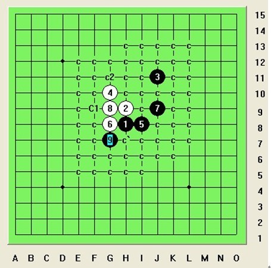
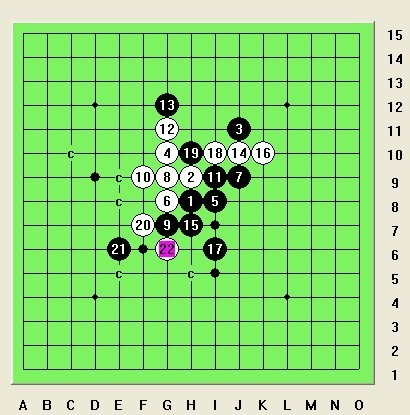
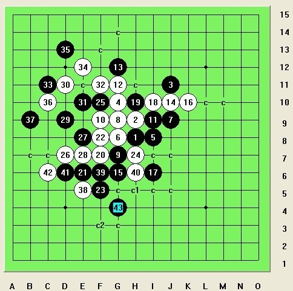

明教外溪月最强4一打地毯必胜研究方法
#1 <font color="Fuchsia">明教外溪月最强4一打地毯必胜研究方法</font>作者：月光公主 发表时间：2013-7-15 14:31:14
［此帖子已被 失落刀 在 2013-7-15 15:19:25 编辑过］
［ 失落刀 于 2013-7-15 15:22:43 时奖励此帖[金币加 100 威望加1］
［ 忧郁的双眼同学于 2013-7-15 20:29:31 时花20金币送鲜花一朵］
［ 忧郁的双眼同学于 2013-7-15 20:29:31 时花20金币送鲜花一朵］
［ 忧郁的双眼同学于 2013-7-15 20:29:31 时花20金币送鲜花一朵］
［ 忧郁的双眼同学于 2013-7-15 20:29:31 时花20金币送鲜花一朵］
［ 忧郁的双眼同学于 2013-7-15 20:29:31 时花20金币送鲜花一朵］
［ 忧郁的双眼同学于 2013-7-15 20:29:31 时花20金币送鲜花一朵］
［ 忧郁的双眼同学于 2013-7-15 20:29:31 时花20金币送鲜花一朵］
［ 忧郁的双眼同学于 2013-7-15 20:29:31 时花20金币送鲜花一朵］
［ 忧郁的双眼同学于 2013-7-15 20:29:31 时花20金币送鲜花一朵］
［ 忧郁的双眼同学于 2013-7-15 20:29:31 时花20金币送鲜花一朵］
［ 忧郁的双眼同学于 2013-7-15 20:29:31 时花20金币送鲜花一朵］
［ 忧郁的双眼同学于 2013-7-15 20:29:31 时花20金币送鲜花一朵］
［ 忧郁的双眼同学于 2013-7-15 20:29:31 时花20金币送鲜花一朵］
［ 忧郁的双眼同学于 2013-7-15 20:29:31 时花20金币送鲜花一朵］
［ 忧郁的双眼同学于 2013-7-15 20:29:31 时花20金币送鲜花一朵］
［ 忧郁的双眼同学于 2013-7-15 20:29:31 时花20金币送鲜花一朵］
［ 忧郁的双眼同学于 2013-7-15 20:29:31 时花20金币送鲜花一朵］
［ 忧郁的双眼同学于 2013-7-15 20:29:31 时花20金币送鲜花一朵］
［ 忧郁的双眼同学于 2013-7-15 20:29:31 时花20金币送鲜花一朵］
［ 忧郁的双眼同学于 2013-7-15 20:29:31 时花20金币送鲜花一朵］
［ 忧郁的双眼同学于 2013-7-15 20:29:31 时花20金币送鲜花一朵］
［ 忧郁的双眼同学于 2013-7-15 20:29:31 时花20金币送鲜花一朵］
［ 忧郁的双眼同学于 2013-7-15 20:29:31 时花20金币送鲜花一朵］
［ 忧郁的双眼同学于 2013-7-15 20:29:31 时花20金币送鲜花一朵］
［ 忧郁的双眼同学于 2013-7-15 20:29:31 时花20金币送鲜花一朵］
［ 忧郁的双眼同学于 2013-7-15 20:29:31 时花20金币送鲜花一朵］
［ 侯军学棋同学于 2013-7-17 14:46:44 时花20金币送鲜花一朵］
［ 侯军学棋同学于 2013-7-17 14:46:44 时花20金币送鲜花一朵］
［ 侯军学棋同学于 2013-7-17 14:46:44 时花20金币送鲜花一朵］
［ 侯军学棋同学于 2013-7-17 14:46:44 时花20金币送鲜花一朵］
［ 侯军学棋同学于 2013-7-17 14:46:44 时花20金币送鲜花一朵］
［ 侯军学棋同学于 2013-7-17 14:46:44 时花20金币送鲜花一朵］
［ 侯军学棋同学于 2013-7-17 14:46:44 时花20金币送鲜花一朵］
［ 侯军学棋同学于 2013-7-17 14:46:44 时花20金币送鲜花一朵］
［ 侯军学棋同学于 2013-7-17 14:46:44 时花20金币送鲜花一朵］
［ 侯军学棋同学于 2013-7-17 14:46:44 时花20金币送鲜花一朵］
［ 思雪儿同学于 2013-7-27 8:54:58 时花20金币送鲜花一朵］
［ 思雪儿同学于 2013-7-27 8:55:48 时花20金币送鲜花一朵］
［ 郎情同学于 2013-7-28 1:20:51 时花20金币送鲜花一朵］
［ 郎情同学于 2013-7-28 1:20:51 时花20金币送鲜花一朵］
［ 郎情同学于 2013-7-28 1:20:51 时花20金币送鲜花一朵］
［ 郎情同学于 2013-7-28 1:20:51 时花20金币送鲜花一朵］
［ 郎情同学于 2013-7-28 1:20:51 时花20金币送鲜花一朵］
［ 空龙同学于 2013-8-13 18:59:52 时花20金币送鲜花一朵］
［ 空龙同学于 2013-8-13 18:59:52 时花20金币送鲜花一朵］
［ 空龙同学于 2013-8-13 18:59:52 时花20金币送鲜花一朵］
［ 空龙同学于 2013-8-13 18:59:52 时花20金币送鲜花一朵］
［ 空龙同学于 2013-8-13 18:59:52 时花20金币送鲜花一朵］
［ 青蛙公主同学于 2013-8-20 14:58:07 时花20金币送鲜花一朵］
［ 道无为同学于 2013-9-6 20:24:55 时花20金币送鲜花一朵］
［ 蓝色羚羊同学于 2013-11-4 19:05:39 时花20金币送鲜花一朵］
［ 蓝色羚羊同学于 2013-11-4 19:06:05 时花20金币送鲜花一朵］
#2 Re:明教外溪月最强4一打地毯必胜研究方法作者：日月丽天 发表时间：2013-7-15 14:42:12
上图这个是一打5，所有6地毯情况，c2的6中等强，地毯起来不难。重要就是成定式最强6C1了。
这个最强4一打5地毯总量将超越我们之前突破的三大强4地毯方法乃至之前公布所有外溪月的4的地毯方法的总量，去年我们公布了外溪月一打完美地毯必胜研究完成的结论，但只公布了半部外溪月的研究方法而已。
［ 忧郁的双眼同学于 2013-7-15 20:29:48 时花20金币送鲜花一朵］
［ 忧郁的双眼同学于 2013-7-15 20:29:48 时花20金币送鲜花一朵］
［ 忧郁的双眼同学于 2013-7-15 20:29:48 时花20金币送鲜花一朵］
［ 忧郁的双眼同学于 2013-7-15 20:29:48 时花20金币送鲜花一朵］
［ 忧郁的双眼同学于 2013-7-15 20:29:48 时花20金币送鲜花一朵］
［ 忧郁的双眼同学于 2013-7-15 20:29:48 时花20金币送鲜花一朵］
［ 忧郁的双眼同学于 2013-7-15 20:29:48 时花20金币送鲜花一朵］
［ 忧郁的双眼同学于 2013-7-15 20:29:48 时花20金币送鲜花一朵］
［ 忧郁的双眼同学于 2013-7-15 20:29:48 时花20金币送鲜花一朵］
［ 忧郁的双眼同学于 2013-7-15 20:29:48 时花20金币送鲜花一朵］
［ 忧郁的双眼同学于 2013-7-15 20:29:48 时花20金币送鲜花一朵］
［ 忧郁的双眼同学于 2013-7-15 20:29:48 时花20金币送鲜花一朵］
［ 忧郁的双眼同学于 2013-7-15 20:29:48 时花20金币送鲜花一朵］
［ 忧郁的双眼同学于 2013-7-15 20:29:48 时花20金币送鲜花一朵］
［ 忧郁的双眼同学于 2013-7-15 20:29:48 时花20金币送鲜花一朵］
［ 忧郁的双眼同学于 2013-7-15 20:29:48 时花20金币送鲜花一朵］
［ 忧郁的双眼同学于 2013-7-15 20:29:48 时花20金币送鲜花一朵］
［ 忧郁的双眼同学于 2013-7-15 20:29:48 时花20金币送鲜花一朵］
［ 忧郁的双眼同学于 2013-7-15 20:29:48 时花20金币送鲜花一朵］
［ 忧郁的双眼同学于 2013-7-15 20:29:48 时花20金币送鲜花一朵］
［ 忧郁的双眼同学于 2013-7-15 20:29:48 时花20金币送鲜花一朵］
［ 忧郁的双眼同学于 2013-7-15 20:29:48 时花20金币送鲜花一朵］
［ 忧郁的双眼同学于 2013-7-15 20:29:48 时花20金币送鲜花一朵］
［ 忧郁的双眼同学于 2013-7-15 20:29:48 时花20金币送鲜花一朵］
［ 忧郁的双眼同学于 2013-7-15 20:29:48 时花20金币送鲜花一朵］
［ 忧郁的双眼同学于 2013-7-15 20:29:48 时花20金币送鲜花一朵］
［ 菜菜的郁郁同学于 2013-7-20 22:50:22 时花20金币送鲜花一朵］
［ 菜菜的郁郁同学于 2013-7-20 22:50:22 时花20金币送鲜花一朵］
［ 菜菜的郁郁同学于 2013-7-20 22:50:22 时花20金币送鲜花一朵］
［ 思雪儿同学于 2013-7-27 8:55:25 时花20金币送鲜花一朵］
［ 郎情同学于 2013-7-28 1:21:16 时花20金币送鲜花一朵］
［ 郎情同学于 2013-7-28 1:21:16 时花20金币送鲜花一朵］
［ 郎情同学于 2013-7-28 1:21:16 时花20金币送鲜花一朵］
［ 郎情同学于 2013-7-28 1:21:16 时花20金币送鲜花一朵］
［ 郎情同学于 2013-7-28 1:21:16 时花20金币送鲜花一朵］
［ 蓝色羚羊同学于 2013-11-4 19:06:29 时花20金币送鲜花一朵］
［ 蓝色羚羊同学于 2013-11-4 19:07:04 时花20金币送鲜花一朵］
［此帖子已被 日月丽天 在 2013-11-9 14:09:37 编辑过］
#3 Re:明教外溪月最强4一打地毯必胜研究方法作者：月光公主 发表时间：2013-7-15 14:45:58
最强6落子后，通过研究，黑棋目前也只有两个7可下，当我们公布一打必胜后，想必有兴趣地毯者肯定需要判断我们用的应该是哪个7，排除法，首先我们要看B2这个7
［此帖子已被 空恨社小仙 在 2013-7-15 14:47:49 编辑过］
#4 Re:月光公主【==明教外溪月最强4一打地毯必胜研究方法==】作者：月光公主 发表时间：2013-7-15 15:02:45
B2这个7落子后，白棋虽然还有唯一强8，唯一强8之后黑棋就还有唯一9活三，黑活三白10必防下面
可以这么说，这个棋10之后，后面通过研究和分析判断是难以做黑必胜地毯下去的，具体一些局面由于白攻还容易形成白优情况。所以这个7不可行
#5 Re:月光公主【==明教外溪月最强4一打地毯必胜研究方法==】作者：月光公主 发表时间：2013-7-15 15:06:15
接下来回归正道。还有就是唯一可行的7，也是我们最强4地毯必胜7，
这个7，有两个强8，c2斜活三强8大致地毯方法是这样：

［ 失落刀 于 2013-7-15 15:24:25 时奖励此帖[金币加 100 威望加1］
［此帖子已被 日月丽天 在 2013-7-15 16:11:18 编辑过］
#6 Re:明教外溪月最强4一打地毯必胜研究方法作者：日月丽天 发表时间：2013-7-15 16:15:32
想必很多人现在最关心的还是最强8，最强8活三，黑必须防守下面，9情况如下：

#7 Re:明教外溪月最强4一打地毯必胜研究方法作者：日月丽天 发表时间：2013-7-15 16:17:19
最强8活三后情况：
9防下面，最强10在8左边继续活三，黑棋11右挡反三，白棋12在4上冲四制造禁手，白14挡3下面黑四三点，这时黑棋15还有两个可下点，如下图一a，一个黑点
我们既然公布地毯必胜，想必人们再做地毯的中间过程要判断哪里位置是必胜点，什么方向才是必胜之路，所以先和大家一看下1下面这个黑点15，稍安勿躁，
#8 Re:明教外溪月最强4一打地毯必胜研究方法作者：日月丽天 发表时间：2013-7-15 16:19:42
黑17已经唯一，接着白18必须唯一冲四反挡，19防，20唯一再冲四，这里几步一直唯一到22
#9 Re:明教外溪月最强4一打地毯必胜研究方法作者：日月丽天 发表时间：2013-7-15 16:21:29

22白棋叫杀后，黑棋被动防守，局面对白有利，具体拆解比较繁琐，做黑必胜这条路已经到了不可能，也就是说这个15路线不可取，有兴趣者要做只能向白杀方向做。
［此帖子已被 日月丽天 在 2013-7-15 18:01:16 编辑过］
［ 岑小鱼同学于 2013-8-13 18:58:29 时花20金币送鲜花一朵］
#10 Re:明教外溪月最强4一打地毯必胜研究方法作者：月光公主 发表时间：2013-7-15 16:24:17
言归正传，让我们一心一意的回到a点必胜15
#11 Re:明教外溪月最强4一打地毯必胜研究方法作者：月光公主 发表时间：2013-7-15 16:25:55

妖刀上经典的定式，外溪月最强的难题，黑白攻防对杀。
精彩的黑白禁手情况对战，禁手问题一直伴随这个外溪月大定式到后面。如果没有禁手规则外溪月这个4都不能称为最强4，早可以提前双三双四黑必胜了，但禁手规则合乎于五子棋棋道，先手黑棋应该通过四三胜取胜，而不是随意33.44长连。现在我们做到外溪月一打必胜，当然也必须是在禁手规则下一打必胜，所以禁手规则注定让必胜增加最高要求的难度，但外溪月还是被我们努力地毯必胜了，禁手规则增加的难度反过来同样成就外溪月最强4地毯黑必胜的意义！
［ 失落刀 于 2013-7-15 16:55:16 时奖励此帖[金币加 100 威望加1］
#12 Re:明教外溪月最强4一打地毯必胜研究方法作者：月光公主 发表时间：2013-7-15 16:28:00
白26跳活三，黑27必须中间防，白棋28还有两个C1和c2点强防与冲四交换，一强一中。
#13 Re:明教外溪月最强4一打地毯必胜研究方法作者：月光公主 发表时间：2013-7-15 16:30:18
先说白c2这个跳冲四的28，黑29中间反三堵，白30中间防成白叫杀，黑31在28和26中间防守如下图：
白有一c1强32是白冲四，黑33后地毯如下：
#14 Re:明教外溪月最强4一打地毯必胜研究方法作者：月光公主 发表时间：2013-7-15 16:32:38
这里就先举例后面地毯情况：
vct方法：
方法思路和地毯图已经发出，具体地毯只是时间问题
［此帖子已被 日月丽天 在 2013-7-16 9:51:16 编辑过］
#15 Re:明教外溪月最强4一打地毯必胜研究方法作者：月光公主 发表时间：2013-7-15 16:38:40
接下来继续谈最强防C1的28，白28叫杀，黑29唯一防，如图下：
我们想大家一直最关心，最迫不及待的是知道这个c1白30跳冲四，白32再活三，黑棋后面在被动防守白棋进攻中怎么地毯杀黑必胜吧？
#16 Re:明教外溪月最强4一打地毯必胜研究方法作者：月光公主 发表时间：2013-7-15 17:03:49
黑必胜33防是白30跳活三外面！
黑棋正确而且可以做到最完美的必胜的33是防在白30活三的外面，而不是防在里面。
［ 失落刀 于 2013-7-15 21:04:23 时奖励此帖[金币加 100 威望加1］
#17 Re:明教外溪月最强4一打地毯必胜研究方法作者：日月丽天 发表时间：2013-7-15 17:06:58
黑33如果防里面如同进入死胡同一般，但习惯性思维会第一先防守中间去探索下去，所以先不妨和大家一起进入死胡同走一遭：
黑33防里面，白34随即冲四关门（从30跳冲四，32反活三是鬼门关大开，33进入，34随即关闭），白棋继续沿着连接路线一路反攻，黑棋只有先抵挡之势。
#18 Re:明教外溪月最强4一打地毯必胜研究方法作者：日月丽天 发表时间：2013-7-15 17:09:23
这里到36白活三，37防守下来，接下来白棋有36下面一步38叫杀棋，既然我们在做研究必胜情况，首先要考虑白棋最直接的反攻情况，白38走36下面形成叫杀一步，黑棋只有通过提前冲四来进行防守，记得有个道理是留四不冲变化无穷，黑棋现在在白棋叫杀下被动提前冲四，下面好的棋型阵势的优势被提前消耗：
上图剩余两个黑点都是黑棋走跳冲四，顺序不分先后，都要跳冲出来防守白棋38的叫杀，同时来转换先后手情况
#19 Re:明教外溪月最强4一打地毯必胜研究方法作者：日月丽天 发表时间：2013-7-15 17:11:16
黑棋这时还是在考虑怎么样防守白棋这个38叫杀，比如黑45在26前直接防如下图
#20 Re:明教外溪月最强4一打地毯必胜研究方法作者：日月丽天 发表时间：2013-7-15 17:12:57
黑棋这样后防守，白棋46防守上，白可以直接占领黑棋最尖端优势点，接下来黑棋左右不能逢源，两边接应不上，看似右边有黑棋优势，但现在做地毯必胜，必胜是不能靠吹出来的，有没有走走就知道，接着每一步黑一有攻，白同样都有防，黑棋进入泥潭一般，这是个求出无期的死胡同。
#21 Re:明教外溪月最强4一打地毯必胜研究方法作者：日月丽天 发表时间：2013-7-15 17:18:02
那么45在43下面提前先跳冲四后再防守，会怎么样呢？
我们都反复试验后，其实也不怎么样，黑是有优，但不能做到地毯必胜，相信很高手在这里下的功夫也不少，黑棋进攻也好，做棋也好，白棋都有防守，所以这样又是个混战棋。必胜不了也是正常，做不出不能抱怨谁。
这里在其他38白棋点上，我们其实也感觉到33堵里面也难以完成地毯，这个就不细说了。
这里我想的是，我们和大家这时不得不反省我们这个一路下来的研究路线，当我们告诉大家最强4也黑必胜后，有兴趣者应该在这里深刻反思一下：是不是前面方法不对？38手是白棋步步逼紧，前方的路是个迷茫的境界，所以苦海无涯回头是岸的时候到了。
实际游戏中开始我们也这样走过，往往是被白方防守带路出来的，对方走白棋才不管你这个棋能必胜，要的就是能防守住你，实际后面局面对弈中都是混战，经过几次游戏里对弈，我们忽然想到一个方法，提前思考，就是黑33防白30活三外面，当时也只是尝试的看看……….现在看来是无心插柳柳成荫。
让流浪的足迹在荒漠里写下永久的回忆写下永久的回忆
［ 空恨社小仙同学于 2013-7-15 17:24:01 时花20金币送鲜花一朵］
#22 Re:明教外溪月最强4一打地毯必胜研究方法作者：月光公主 发表时间：2013-7-15 17:27:42

黑33防外面又一是一番别洞天！
现在虽然告诉大家33确定必胜点就在这里，虽然这里让大家看到黑33防守白30外面的黑必胜地毯图，但这个黑33同样地毯之路是困难重重，任重道远，新的难题的同样接踵而来，我们当时也是在根本不知道能不能黑必胜的情况下走下去的，也根本没有人能提示说这个外溪月最强4能黑必胜，不论自己能不能做出必胜地毯，也不敢有任何抱怨之心，一切都在至诚虚心探寻着自然的规律，虽是一条通天之路，但也贵在坚持不懈走下去…………………..
［ 空恨社小仙同学于 2013-7-15 22:44:08 时花20金币送鲜花一朵］
［ 空恨社小仙同学于 2013-7-15 22:44:08 时花20金币送鲜花一朵］
［ 空恨社小仙同学于 2013-7-15 22:44:08 时花20金币送鲜花一朵］
［ 空恨社小仙同学于 2013-7-15 22:44:08 时花20金币送鲜花一朵］
［ 空恨社小仙同学于 2013-7-15 22:44:08 时花20金币送鲜花一朵］
［ 空恨社小仙同学于 2013-7-15 22:44:08 时花20金币送鲜花一朵］
［ 空恨社小仙同学于 2013-7-15 22:44:08 时花20金币送鲜花一朵］
［ 空恨社小仙同学于 2013-7-15 22:44:08 时花20金币送鲜花一朵］
［ 空恨社小仙同学于 2013-7-15 22:44:08 时花20金币送鲜花一朵］
［ 空恨社小仙同学于 2013-7-15 22:44:08 时花20金币送鲜花一朵］
［ 空恨社小仙 于 2013-7-15 22:46:45 时奖励此帖[金币加 100 威望加1］
［ 光明静心同学于 2013-7-23 17:38:29 时花20金币送鲜花一朵］
［ 光明静心同学于 2013-7-23 17:38:29 时花20金币送鲜花一朵］
［ 光明静心同学于 2013-7-23 17:38:29 时花20金币送鲜花一朵］
［ 光明静心同学于 2013-7-23 17:38:29 时花20金币送鲜花一朵］
［ 光明静心同学于 2013-7-23 17:38:29 时花20金币送鲜花一朵］
#23 Re:明教外溪月最强4一打地毯必胜研究方法作者：月光公主 发表时间：2013-7-15 17:36:32
接下来我们和大家一起共同驰骋在必胜之路的沙场上：

黑33防外面，白棋34中可以冲四先继续交换，白36可以在33下活三，黑37防白活三下：
#24 Re:明教外溪月最强4一打地毯必胜研究方法作者：月光公主 发表时间：2013-7-15 17:38:49
这里上面空间有白棋交换，下面一些点分别都有各种地毯方法，这里在21下面有一个c1强防，马上会在回到29手所有30情况综合谈怎么样去地毯。
［此帖子已被 月光公主 在 2013-7-15 17:40:24 编辑过］
［ 失落刀同学于 2013-7-15 21:06:57 时花20金币送鲜花一朵］
［ 失落刀同学于 2013-7-15 21:06:57 时花20金币送鲜花一朵］
［ 失落刀同学于 2013-7-15 21:06:57 时花20金币送鲜花一朵］
［ 失落刀同学于 2013-7-15 21:06:57 时花20金币送鲜花一朵］
［ 失落刀同学于 2013-7-15 21:06:57 时花20金币送鲜花一朵］
［ 失落刀同学于 2013-7-15 21:06:57 时花20金币送鲜花一朵］
［ 失落刀同学于 2013-7-15 21:06:57 时花20金币送鲜花一朵］
［ 失落刀同学于 2013-7-15 21:06:57 时花20金币送鲜花一朵］
［ 失落刀同学于 2013-7-15 21:06:57 时花20金币送鲜花一朵］
［ 失落刀同学于 2013-7-15 21:06:57 时花20金币送鲜花一朵］
［ 失落刀同学于 2013-7-15 21:06:57 时花20金币送鲜花一朵］
［ 失落刀同学于 2013-7-15 21:06:57 时花20金币送鲜花一朵］
［ 失落刀同学于 2013-7-15 21:06:57 时花20金币送鲜花一朵］
［ 失落刀同学于 2013-7-15 21:06:57 时花20金币送鲜花一朵］
［ 失落刀同学于 2013-7-15 21:06:57 时花20金币送鲜花一朵］
［ 失落刀同学于 2013-7-15 21:06:57 时花20金币送鲜花一朵］
［ 失落刀同学于 2013-7-15 21:06:57 时花20金币送鲜花一朵］
［ 失落刀同学于 2013-7-15 21:06:57 时花20金币送鲜花一朵］
［ 失落刀同学于 2013-7-15 21:06:57 时花20金币送鲜花一朵］
［ 失落刀同学于 2013-7-15 21:06:57 时花20金币送鲜花一朵］
［ 失落刀同学于 2013-7-15 21:06:57 时花20金币送鲜花一朵］
［ 失落刀同学于 2013-7-15 21:06:57 时花20金币送鲜花一朵］
［ 失落刀同学于 2013-7-15 21:06:57 时花20金币送鲜花一朵］
［ 失落刀同学于 2013-7-15 21:06:57 时花20金币送鲜花一朵］
［ 失落刀同学于 2013-7-15 21:06:57 时花20金币送鲜花一朵］
［ 失落刀同学于 2013-7-15 21:06:57 时花20金币送鲜花一朵］
#25 Re:明教外溪月最强4一打地毯必胜研究方法作者：日月丽天 发表时间：2013-7-15 17:46:49
黑33提前在白36上面控防白38，所以说之前的公布一句地毯必胜结论足以提醒所有对外溪月研究过人了。
［此帖子已被 日月丽天 在 2013-7-15 17:52:29 编辑过］
［ 小帮帮同学于 2013-7-15 20:55:10 时花20金币送鲜花一朵］
［ 小帮帮同学于 2013-7-15 20:55:10 时花20金币送鲜花一朵］
［ 小帮帮同学于 2013-7-15 20:55:10 时花20金币送鲜花一朵］
［ 侯军学棋同学于 2013-7-17 14:46:14 时花20金币送鲜花一朵］
［ 侯军学棋同学于 2013-7-17 14:46:14 时花20金币送鲜花一朵］
［ 侯军学棋同学于 2013-7-17 14:46:14 时花20金币送鲜花一朵］
［ 侯军学棋同学于 2013-7-17 14:46:14 时花20金币送鲜花一朵］
［ 侯军学棋同学于 2013-7-17 14:46:14 时花20金币送鲜花一朵］
［ 侯军学棋同学于 2013-7-17 14:46:14 时花20金币送鲜花一朵］
［ 侯军学棋同学于 2013-7-17 14:46:14 时花20金币送鲜花一朵］
［ 侯军学棋同学于 2013-7-17 14:46:14 时花20金币送鲜花一朵］
［ 侯军学棋同学于 2013-7-17 14:46:14 时花20金币送鲜花一朵］
［ 侯军学棋同学于 2013-7-17 14:46:14 时花20金币送鲜花一朵］
［ 雪融同学于 2013-7-21 13:43:53 时花20金币送鲜花一朵］
［ 雪融同学于 2013-7-21 13:45:15 时花20金币送鲜花一朵］
［ 雪融同学于 2013-7-21 13:48:09 时花20金币送鲜花一朵］
［ 雪融同学于 2013-7-21 13:50:10 时花20金币送鲜花一朵］
［ 雪融同学于 2013-7-21 13:54:31 时花20金币送鲜花一朵］
［ 雪融同学于 2013-7-21 13:57:24 时花20金币送鲜花一朵］
［ 雪融同学于 2013-7-21 13:57:24 时花20金币送鲜花一朵］
［ 雪融同学于 2013-7-21 13:57:24 时花20金币送鲜花一朵］
［ 雪融同学于 2013-7-21 13:57:24 时花20金币送鲜花一朵］
［ 雪融同学于 2013-7-21 13:57:24 时花20金币送鲜花一朵］
［ 玉笛同学于 2013-7-23 16:14:10 时花20金币送鲜花一朵］
#26 Re:明教外溪月最强4一打地毯必胜研究方法作者：啊呆 发表时间：2013-7-15 19:08:52


#27 Re:明教外溪月最强4一打地毯必胜研究方法作者：忧郁的双眼 发表时间：2013-7-15 20:28:40


［此帖子已被 日月丽天 在 2013-7-16 7:44:36 编辑过］
#28 Re:明教外溪月最强4一打地毯必胜研究方法作者：失落刀 发表时间：2013-7-15 21:12:53
祝贺丽天和月亮、小仙取得的成果，以及共享精神。［ 空恨社小仙同学于 2013-7-15 22:46:22 时花20金币送鲜花一朵］
［ 空恨社小仙同学于 2013-7-15 22:46:22 时花20金币送鲜花一朵］
［ 空恨社小仙同学于 2013-7-15 22:46:22 时花20金币送鲜花一朵］
［ 空恨社小仙同学于 2013-7-15 22:46:22 时花20金币送鲜花一朵］
［ 空恨社小仙同学于 2013-7-15 22:46:22 时花20金币送鲜花一朵］
［ 空恨社小仙同学于 2013-7-15 22:46:22 时花20金币送鲜花一朵］
［ 空恨社小仙同学于 2013-7-15 22:46:22 时花20金币送鲜花一朵］
［ 空恨社小仙同学于 2013-7-15 22:46:22 时花20金币送鲜花一朵］
［ 空恨社小仙同学于 2013-7-15 22:46:22 时花20金币送鲜花一朵］
［ 空恨社小仙同学于 2013-7-15 22:46:22 时花20金币送鲜花一朵］
［ 空恨社小仙同学于 2013-7-15 22:46:22 时花20金币送鲜花一朵］
［ 空恨社小仙同学于 2013-7-15 22:46:22 时花20金币送鲜花一朵］
［ 空恨社小仙同学于 2013-7-15 22:46:22 时花20金币送鲜花一朵］
［ 空恨社小仙同学于 2013-7-15 22:46:22 时花20金币送鲜花一朵］
［ 空恨社小仙同学于 2013-7-15 22:46:22 时花20金币送鲜花一朵］
［ 空恨社小仙同学于 2013-7-15 22:46:22 时花20金币送鲜花一朵］
［ 空恨社小仙同学于 2013-7-15 22:46:22 时花20金币送鲜花一朵］
［ 空恨社小仙同学于 2013-7-15 22:46:22 时花20金币送鲜花一朵］
［ 空恨社小仙同学于 2013-7-15 22:46:22 时花20金币送鲜花一朵］
［ 空恨社小仙同学于 2013-7-15 22:46:22 时花20金币送鲜花一朵］
［ 空恨社小仙同学于 2013-7-15 22:46:22 时花20金币送鲜花一朵］
［ 空恨社小仙同学于 2013-7-15 22:46:22 时花20金币送鲜花一朵］
［ 空恨社小仙同学于 2013-7-15 22:46:22 时花20金币送鲜花一朵］
［ 空恨社小仙同学于 2013-7-15 22:46:22 时花20金币送鲜花一朵］
［ 空恨社小仙同学于 2013-7-15 22:46:22 时花20金币送鲜花一朵］
［ 空恨社小仙同学于 2013-7-15 22:46:22 时花20金币送鲜花一朵］
#29 Re:明教外溪月最强4一打地毯必胜研究方法作者：恺恺 发表时间：2013-7-16 7:55:52
哇。。楼主厉害#30 Re:明教外溪月最强4一打地毯必胜研究方法作者：逆刃 发表时间：2013-7-16 9:18:23
祝贺，杀得很精彩！#31 Re:明教外溪月最强4一打地毯必胜研究方法作者：苯酚 发表时间：2013-7-16 10:44:32
很久没路过了。。。［ 失落刀同学于 2013-7-17 15:13:17 时花20金币送鲜花一朵］
#32 Re:明教外溪月最强4一打地毯必胜研究方法作者：郎情 发表时间：2013-7-17 15:11:35
大师就是厉害#33 Re:明教外溪月最强4一打地毯必胜研究方法作者：月下回廊 发表时间：2013-7-17 15:45:03
虽然我很少下妖刀，但是看到了大师们的地毯思路，确实强大！这得费多少功夫呀，不容易#34 Re:明教外溪月最强4一打地毯必胜研究方法作者：小样就是这个样 发表时间：2013-7-19 15:05:06
每一个截图都是一道地毯习题，地毯难度等级★★★★★★★★★★.....目前还没做出一道
［ 空恨社小仙同学于 2013-7-20 20:13:50 时花20金币送鲜花一朵］
#35 Re:小样就是这个样【==Re:明教外溪月最强4一打地毯必胜研究方法==】作者：空恨社小仙 发表时间：2013-7-20 20:19:57
是啊，功夫不负有心人，多少个不眠之夜，多少次峰回路转，就凭着一个探索真理的信念，终于拨开云雾见丽日，登上绝顶赏月亮。。。#36 Re:空恨社小仙【==Re:小样就是这个样【==Re:明教外溪月最强4一打地毯必胜研究方法==】==】作者：空恨社小仙 发表时间：2013-7-20 20:23:03
记得找到正确方法之后，丽天曾经说过的一段话：所谓外溪月（外西越），不知道是否天意使然，冥冥中早有按排，最后这个开局真的就是从西边的外面逾越了出来。。。...
#37 Re:明教外溪月最强4一打地毯必胜研究方法作者：菜菜的郁郁 发表时间：2013-7-20 22:55:40
#38 <font color="Fuchsia">Re:明教外溪月最强4一打地毯必胜研究方法</font>作者：雪融 发表时间：2013-7-21 13:12:44
一直听说外溪月已经必胜，今天有幸看到外溪月研究地毯方法。祝贺日月丽天 ，月光公主你们明教的研究成果，学习了！！！！［ 失落刀 于 2013-7-21 15:04:55 时奖励此帖[金币加 100 威望加1］0+1
［此帖子已被 失落刀 在 2013-7-21 15:06:39 编辑过］
［ 失落刀同学于 2013-7-21 15:07:16 时花20金币送鲜花一朵］
#39 Re:明教外溪月最强4一打地毯必胜研究方法作者：侯军学棋 发表时间：2013-7-21 21:04:20
求真相，大家的意思。#40 Re:明教外溪月最强4一打地毯必胜研究方法作者：日月丽天 发表时间：2013-7-22 11:10:49
这个最强4必胜，目标方法已经给大家确定了，只有每一个人亲自和努力做了才能体会到他的奥妙和难度。
我们明教外溪月最强4研究方法公布情况先告一段落。
只要是有人全心全意的真心的投入了，再拆出什么疑难问题，我们将继续把方法介绍给大家！
我们期待看到很多人会各自独立完成最后的地毯和必胜的消息。
［ 空恨社小仙同学于 2013-7-22 11:14:32 时花20金币送鲜花一朵］
［ 空恨社小仙同学于 2013-7-22 11:14:32 时花20金币送鲜花一朵］
［ 空恨社小仙同学于 2013-7-22 11:14:32 时花20金币送鲜花一朵］
［ 空恨社小仙同学于 2013-7-22 11:14:32 时花20金币送鲜花一朵］
［ 空恨社小仙同学于 2013-7-22 11:14:32 时花20金币送鲜花一朵］
#41 Re:日月丽天【==Re:明教外溪月最强4一打地毯必胜研究方法==】作者：空恨社小仙 发表时间：2013-7-22 11:15:06
我也希望大家先做后问，独立研究，亲自地毯，深刻体会外溪月的奥妙!#42 Re:明教外溪月最强4一打地毯必胜研究方法作者：浪花小妖 发表时间：2013-7-23 9:12:31
很厉害哦，这么难都攻克下来了，真是惊喜啊！之前个别所谓质疑必胜的，甚为可笑。明教妖刀研究永远是最权威的。［ 失落刀同学于 2013-7-23 10:09:56 时花20金币送鲜花一朵］
#43 Re:明教外溪月最强4一打地毯必胜研究方法作者：何炜 发表时间：2013-7-23 10:29:12
太强大了··［ 日月丽天 于 2013-10-19 9:58:55 时奖励此帖[金币加 100 威望加1］
#44 Re:明教外溪月最强4一打地毯必胜研究方法作者：玉笛 发表时间：2013-7-23 15:33:30
---------外溪月最强4重要一路。2013年7月23日
［ 日月丽天 于 2013-7-23 17:47:41 时奖励此帖[金币加 100 威望加1］
［ 日月丽天同学于 2013-7-23 17:48:13 时花20金币送鲜花一朵］
［ 日月丽天同学于 2013-7-23 17:48:13 时花20金币送鲜花一朵］
［ 日月丽天同学于 2013-7-23 17:48:13 时花20金币送鲜花一朵］
［ 日月丽天同学于 2013-7-23 17:48:13 时花20金币送鲜花一朵］
［ 日月丽天同学于 2013-7-23 17:48:13 时花20金币送鲜花一朵］
［ 光明静心同学于 2013-7-23 17:50:23 时花20金币送鲜花一朵］
［ 光明静心同学于 2013-7-23 17:50:23 时花20金币送鲜花一朵］
［ 光明静心同学于 2013-7-23 17:50:23 时花20金币送鲜花一朵］
［此帖子已被 日月丽天 在 2013-7-23 17:52:01 编辑过］
#45 Re:明教外溪月最强4一打地毯必胜研究方法作者：菜菜的郁郁 发表时间：2013-8-6 21:59:09
 求指教 各位大师这个怎么杀 还是前面出现什么错误了。。。
求指教 各位大师这个怎么杀 还是前面出现什么错误了。。。#46 Re:明教外溪月最强4一打地毯必胜研究方法作者：日月丽天 发表时间：2013-8-7 7:53:14
回楼上，图没有发出来，你用爱五网棋盘发
#47 Re:明教外溪月最强4一打地毯必胜研究方法作者：侯军学棋 发表时间：2013-8-11 21:43:01
#48 Re:侯军学棋【==Re:明教外溪月最强4一打地毯必胜研究方法==】作者：空恨社小仙 发表时间：2013-8-13 2:00:53
这个38用一个精彩VCT就可以杀了，没什么悬念，还是让丽天来公布吧，如果笨人用笨方法也可以慢慢地先向右面冲四过后极度猥琐极度交换过后慢慢杀死也应该没什么悬念！当今乃电脑软件时代，电脑配置高，软件强大的各种猥琐慢慢扫，通过极度的耐心和钻牛角尖的精神也是可以弄死一些交换繁杂的变化。。。［此帖子已被 空恨社小仙 在 2013-8-13 2:10:38 编辑过］
#49 Re:空恨社小仙【==Re:侯军学棋【==Re:明教外溪月最强4一打地毯必胜研究方法==】==】作者：空恨社小仙 发表时间：2013-8-13 2:16:48
另外补充一下，不管是38还是34还是哪一手，反正只要这个38手位置的防点都是可以同样用直接VCT杀的，并不需要去交换浪费时间！#50 Re:明教外溪月最强4一打地毯必胜研究方法作者：日月丽天 发表时间：2013-8-13 8:00:17
47楼军大师发的图是问到一个强防。
最近我身边棋友不少都可以完成地毯了，过会告诉大家这些难点强防具体地毯方法。
还有就是地毯这样大的局面，应该先以下面的强防难点为基础，分别先每一个直接防守来做，其中再做交换。之后再以先白交换为先，分别一个交换一交换为基础做，这样才有板有眼，地毯出的谱也自然有理有序。
如果相互混合扫，再相互扫了合并，那么假杀，没杀会漏洞百出，难以避免，又难以发现。再不假思索，扫出的谱送出去也必然误人误己。
［此帖子已被 日月丽天 在 2013-8-13 8:07:06 编辑过］
#51 Re:明教外溪月最强4一打地毯必胜研究方法作者：日月丽天 发表时间：2013-8-13 8:33:17
上次前进到白34冲四后的情况
白棋36上去活三，37还是防守下面，这里白棋在棋盘上面眠三有好几个，白棋的交换反攻非常多，但黑棋都可以控，地毯时要细心，首先不能让白棋交换反攻出白杀，同时保证黑棋能全面地毯必胜！
（还有一种情况，就是37直接堵白活三上面，这样的话，上面的白棋的交换被黑棋直接有力的控制，但白棋通过眠三下来的优势影响黑棋下面的优势，最终会牵制黑棋地毯必胜，所以堵上面虽是围追堵截，但有道是穷寇莫追，因为白棋36已经回撤上去，假如白棋在上面可以白反杀，或白棋交换不完，那么也是白棋气数未尽，只能属于一个开局无法注定必胜的结果。所以正确的方法还是堵下面，让白棋后撤的交换中自生自灭。）
［ 小样就是这个样同学于 2013-8-13 9:36:01 时花20金币送鲜花一朵］
［ 小样就是这个样同学于 2013-8-13 9:36:01 时花20金币送鲜花一朵］
［ 小样就是这个样同学于 2013-8-13 9:36:01 时花20金币送鲜花一朵］
［ 小样就是这个样同学于 2013-8-13 9:36:01 时花20金币送鲜花一朵］
［ 小样就是这个样同学于 2013-8-13 9:36:01 时花20金币送鲜花一朵］
［ 小样就是这个样同学于 2013-8-13 9:36:01 时花20金币送鲜花一朵］
［ 小样就是这个样同学于 2013-8-13 9:36:01 时花20金币送鲜花一朵］
［ 小样就是这个样同学于 2013-8-13 9:36:01 时花20金币送鲜花一朵］
［ 小样就是这个样同学于 2013-8-13 9:36:01 时花20金币送鲜花一朵］
［ 小样就是这个样同学于 2013-8-13 9:36:01 时花20金币送鲜花一朵］
［ 蓝色羚羊同学于 2013-11-4 19:05:20 时花20金币送鲜花一朵］
#52 Re:明教外溪月最强4一打地毯必胜研究方法作者：月光公主 发表时间：2013-8-13 8:36:22
白36上跳活三，黑37防守中间，上下都有很多交换，具体地毯具体对待。
#53 Re:明教外溪月最强4一打地毯必胜研究方法作者：月光公主 发表时间：2013-8-13 8:39:13
白36四四叫杀，黑37防四四点，同样上下都有很多交换。
#54 Re:明教外溪月最强4一打地毯必胜研究方法作者：月光公主 发表时间：2013-8-13 8:40:16
白36下跳活三这样，黑37中间防
［ 小样就是这个样同学于 2013-8-13 9:36:54 时花20金币送鲜花一朵］
［ 小样就是这个样同学于 2013-8-13 9:36:54 时花20金币送鲜花一朵］
［ 小样就是这个样同学于 2013-8-13 9:36:54 时花20金币送鲜花一朵］
［ 小样就是这个样同学于 2013-8-13 9:36:54 时花20金币送鲜花一朵］
［ 小样就是这个样同学于 2013-8-13 9:36:54 时花20金币送鲜花一朵］
［ 小样就是这个样同学于 2013-8-13 9:36:54 时花20金币送鲜花一朵］
［ 小样就是这个样同学于 2013-8-13 9:36:54 时花20金币送鲜花一朵］
［ 小样就是这个样同学于 2013-8-13 9:36:54 时花20金币送鲜花一朵］
［ 小样就是这个样同学于 2013-8-13 9:36:54 时花20金币送鲜花一朵］
［ 小样就是这个样同学于 2013-8-13 9:36:54 时花20金币送鲜花一朵］
#55 Re:明教外溪月最强4一打地毯必胜研究方法作者：小样就是这个样 发表时间：2013-8-13 9:47:27
照图做就有了方向，避免走一些弯路，少品尝会其中的艰难，不过还是可以体会其中的方法的
#56 Re:明教外溪月最强4一打地毯必胜研究方法作者：日月丽天 发表时间：2013-8-13 9:55:12
现在我们一起再回归到所有30手------这是外溪月最强4最强的变化整个基础工程
所有的强防和交换都从这个29变化开始
现在给大家谈在30手c2，c3，c4，c5，c6等等各自的地毯方法
C2这个点，地毯方法很重要，还是做棋叫杀等待白棋防守交换了再杀，还是寻求黑有直接的VCT杀呢？
#57 Re:明教外溪月最强4一打地毯必胜研究方法作者：日月丽天 发表时间：2013-8-13 9:58:50
大家看上图. 虽然在这里又得到两个vct方法，但a1的vct在很多交换时是起决定性的作用，而a2这个vct方法不能在其他白棋有很多交换时时时可用。
B点不能直接杀，白棋利用冲四防守会转变成各种交换棋，黑棋需要等待白棋完全的交换，但在地毯试验中，B点方法往往在很多同理局面遇到交换不完的情况。
所以21下面这个白位置，每次都需要真正的黑vct方法来地毯了
a1和a2分别两个vct,一个极左，一个极右，a2vct极右只能解一时燃眉之急，任重道远的地毯还必须极左的a1vct来完成必胜。
#58 Re:明教外溪月最强4一打地毯必胜研究方法作者：日月丽天 发表时间：2013-8-13 10:01:25

31右边冲四，不让白棋提前冲四把眠三变为长连禁手，黑33再外防白棋30时叫杀，同时黑自身叫杀：
两点可共通
#59 Re:明教外溪月最强4一打地毯必胜研究方法作者：日月丽天 发表时间：2013-8-13 10:05:18
最后vct一路完成于这样必胜
这个a2的31是右边先冲四，这个方法只能在一部分的情况可以使用，一旦30白棋在上面先反攻交换，白棋随时随地又再来走21下面这个位置，这个a2的vct的这套直接方法是不可行的。除非再次进行无穷无尽的交换。（这里之后再谈这个想到容易，有一种拆完却极端的扫描方法）
#60 Re:明教外溪月最强4一打地毯必胜研究方法作者：日月丽天 发表时间：2013-8-13 10:06:56
但天无绝人之路，让我们在关键的时候终于找到a1这个最精彩的vct，a1这个vct至始至终都能完成白棋走21下面这个白叫杀而转变为黑必胜，可以说肩负着地毯必胜的一方重任：
黑31左边冲四，33再冲四以此直接破掉白棋30时形成的叫杀，黑棋站稳局面得到先手后，黑35开始做非常精彩的vct杀，这是一个复合式vct,
具体vct后面地毯，大家有兴趣的可以地毯试一试，
#61 Re:明教外溪月最强4一打地毯必胜研究方法作者：日月丽天 发表时间：2013-8-13 10:12:37
比如在上面白棋先进行交换中也可以遇到这样：

从43步做杀开始，后面交换冲四全部冲了能交换到七八十步。
［ 空恨社小仙同学于 2013-8-13 10:45:13 时花20金币送鲜花一朵］
［ 空恨社小仙同学于 2013-8-13 10:45:13 时花20金币送鲜花一朵］
［ 空恨社小仙同学于 2013-8-13 10:45:13 时花20金币送鲜花一朵］
［ 空恨社小仙同学于 2013-8-13 10:45:13 时花20金币送鲜花一朵］
［ 空恨社小仙同学于 2013-8-13 10:45:13 时花20金币送鲜花一朵］
［ 空恨社小仙同学于 2013-8-13 10:45:13 时花20金币送鲜花一朵］
［ 空恨社小仙同学于 2013-8-13 10:45:13 时花20金币送鲜花一朵］
［ 空恨社小仙同学于 2013-8-13 10:45:13 时花20金币送鲜花一朵］
［ 空恨社小仙同学于 2013-8-13 10:45:13 时花20金币送鲜花一朵］
［ 空恨社小仙同学于 2013-8-13 10:45:13 时花20金币送鲜花一朵］
［ 空恨社小仙 于 2013-8-13 10:46:08 时奖励此帖[金币加 100 威望加1］
#62 Re:明教外溪月最强4一打地毯必胜研究方法作者：日月丽天 发表时间：2013-8-13 10:31:28
去年完成必胜后，我们一直确定每一个难点有没有多种杀法。对于这个38，我们在思考，当以后有人地毯时，若找不到正确的vct杀法时，还有没有其他地毯方法：
这个方法，想起来比较简单，但后面交换扫起来却异常的猥琐，不过也是一种迫不及待的地毯形式。这段时间一些急功近利扫谱，让我们再次听到有用起这种方法出现。
#63 Re:明教外溪月最强4一打地毯必胜研究方法作者：月光公主 发表时间：2013-8-13 10:40:00
我们再回到所有的30手，看白c3的30
这个白30防守比较好，黑棋31只能这样做杀，白棋32走26下面冲四34再下活三，黑35下防后面局面变为全盘地毯局面如下图
#64 Re:明教外溪月最强4一打地毯必胜研究方法作者：月光公主 发表时间：2013-8-13 10:45:12
这个主要是上面地毯交换多，当然在30手时白棋可以在上面先反攻
冲四活三交换，白棋随时随地走在17下面防守，但总体上这里图上31位置的方法还是一样。
#65 Re:明教外溪月最强4一打地毯必胜研究方法作者：月光公主 发表时间：2013-8-13 10:48:38
比如这个：
等等很多很多…….
#66 Re:日月丽天【==Re:明教外溪月最强4一打地毯必胜研究方法==】作者：空恨社小仙 发表时间：2013-8-13 10:48:57
61楼才是应对这个38防点变化的正道，这才叫棋道，这样杀是有五子棋艺术连接思想的，至于62楼的杀法，我根本不想看，不想把时间浪费在那种无意义的交换上了，免了，那种杀法是机器人的杀法了，看不到艺术了！#67 Re:明教外溪月最强4一打地毯必胜研究方法作者：日月丽天 发表时间：2013-8-13 10:51:31
让我们再回到30手情况：

这个白30叫杀，黑棋是防守中间四三点，白棋左边冲四，地毯情况转为全盘，上面的交换还是共存如下图：
#68 Re:明教外溪月最强4一打地毯必胜研究方法作者：日月丽天 发表时间：2013-8-13 10:53:06
主要还是需要上面再去交换
#69 Re:明教外溪月最强4一打地毯必胜研究方法作者：日月丽天 发表时间：2013-8-13 10:54:14
地毯起来白棋交换不计其数，反反复复。
#70 Re:空恨社小仙【==Re:日月丽天【==Re:明教外溪月最强4一打地毯必胜研究方法==】==】作者：空恨社小仙 发表时间：2013-8-13 10:54:16
中局的杀棋，不是越多杀法越好，不象一个开局的第五手，那越多杀法就越对山口规则有意义，中局杀棋就是越轻快简洁越好，这是我个人的观点，并不要求大家认同，中局杀棋，我从不喜欢多种杀法，能直接V的，我就不会在我个人的谱里加上别的猥琐杀法。。。#71 Re:明教外溪月最强4一打地毯必胜研究方法作者：日月丽天 发表时间：2013-8-13 10:55:14

这个30位置的情况也是这个意思，都不可转变的进入白棋交换
#72 Re:明教外溪月最强4一打地毯必胜研究方法作者：小样就是这个样 发表时间：2013-8-13 11:15:27
看了丽天60楼的vct习题截图后，经过半天的努力，终于地毯了，不容易！！
［此帖子已被 小样就是这个样 在 2013-8-13 11:15:59 编辑过］
［ 空恨社小仙 于 2013-8-13 11:19:21 时奖励此帖[金币加 100 威望加1］
#73 Re:小样就是这个样【==Re:明教外溪月最强4一打地毯必胜研究方法==】作者：空恨社小仙 发表时间：2013-8-13 11:27:46
地毯成功的同时，棋谱也开始疯狂传播，又一个开局被彻底毁了。。。喜悦之余，伤感又起。
珍惜每一个没有地毯或者已经地毯还没被到处传播的开局和变化吧！
［ 小样就是这个样同学于 2013-8-13 11:42:40 时花20金币送鲜花一朵］
［ 小样就是这个样同学于 2013-8-13 11:42:40 时花20金币送鲜花一朵］
［ 小样就是这个样同学于 2013-8-13 11:42:40 时花20金币送鲜花一朵］
［ 小样就是这个样同学于 2013-8-13 11:42:40 时花20金币送鲜花一朵］
［ 小样就是这个样同学于 2013-8-13 11:42:40 时花20金币送鲜花一朵］
［ 小样就是这个样同学于 2013-8-13 11:42:40 时花20金币送鲜花一朵］
#74 Re:明教外溪月最强4一打地毯必胜研究方法作者：小样就是这个样 发表时间：2013-8-13 11:39:59
是啊，传棋谱，不仅是毁了一个开局，也毁了一个五子棋爱好者对此开局的一份感情，比如外溪月吧，就是妖刀开局送给大家的一份精致的礼物，由奥秘的过程+完美的结果组成，得到棋谱的人就好比得到了一盆没有绿叶的鲜花，虽然美丽但却没有活力的绽放...伤感...［ 空恨社小仙同学于 2013-8-13 11:41:52 时花20金币送鲜花一朵］
［ 空恨社小仙同学于 2013-8-13 11:41:52 时花20金币送鲜花一朵］
［ 空恨社小仙同学于 2013-8-13 11:41:52 时花20金币送鲜花一朵］
［ 空恨社小仙同学于 2013-8-13 11:41:52 时花20金币送鲜花一朵］
［ 空恨社小仙同学于 2013-8-13 11:41:52 时花20金币送鲜花一朵］
［ 空恨社小仙同学于 2013-8-13 11:41:52 时花20金币送鲜花一朵］
［ 空恨社小仙同学于 2013-8-13 11:41:52 时花20金币送鲜花一朵］
［ 空恨社小仙同学于 2013-8-13 11:41:52 时花20金币送鲜花一朵］
［ 空恨社小仙同学于 2013-8-13 11:41:52 时花20金币送鲜花一朵］
［ 空恨社小仙同学于 2013-8-13 11:41:52 时花20金币送鲜花一朵］
［ 空恨社小仙 于 2013-8-13 11:42:29 时奖励此帖[金币加 100 威望加1］
#75 Re:小样就是这个样【==Re:明教外溪月最强4一打地毯必胜研究方法==】作者：空恨社小仙 发表时间：2013-8-13 11:44:04
你能验证那个精彩VCT值得庆祝，能有这样的感悟更是不简单，这才是珍惜棋道的人！#76 Re:空恨社小仙【==Re:小样就是这个样【==Re:明教外溪月最强4一打地毯必胜研究方法==】==】作者：空恨社小仙 发表时间：2013-8-13 11:47:06
得到一盆别人送给你的花，和自己从花苗亲自看着花儿生长绽放的感悟和心情完全是不一样的，不可同日而语，更不能感悟花的生命力，也不可能对花有感情！
#77 Re:明教外溪月最强4一打地毯必胜研究方法作者：小样就是这个样 发表时间：2013-8-13 11:48:50

#78 Re:明教外溪月最强4一打地毯必胜研究方法作者：日月丽天 发表时间：2013-8-13 15:38:01
花开花落，四季交替，大自然是有定数的。今天其实正好是去年我们第一次发表明教外溪月列传贴一周年时间。
那时的外溪月已经完成到剩余两个强4，一晃一年已经过来了。
#79 Re:明教外溪月最强4一打地毯必胜研究方法作者：雪融 发表时间：2013-8-13 18:50:05
那些基本是棋室的一些人。不是自己的研究成果，再怎么疯传也不能体会其中的奥妙和精彩！！！［此帖子已被 雪融 在 2013-8-13 19:12:55 编辑过］
#80 Re:月光公主【==明教外溪月最强4一打地毯必胜研究方法==】作者：岑小鱼 发表时间：2013-8-13 19:00:17
以前做花月的一个分析和9楼的图完全一样（不看顺序）［ 日月丽天同学于 2013-8-13 19:04:56 时花20金币送鲜花一朵］
［ 日月丽天同学于 2013-8-13 19:04:56 时花20金币送鲜花一朵］
［ 日月丽天同学于 2013-8-13 19:04:56 时花20金币送鲜花一朵］
#81 Re:月光公主【==明教外溪月最强4一打地毯必胜研究方法==】作者：空龙 发表时间：2013-8-13 19:22:28
［此帖子已被 空龙 在 2013-8-13 19:39:42 编辑过］
［ 失落刀 于 2013-8-13 21:21:39 时奖励此帖[金币加 100 威望加1］
#82 Re:空龙【==明教外溪月最强4一打地毯必胜研究方法==】作者：光明静心 发表时间：2013-8-15 9:17:49
其实看到去年明教公布外溪月最强4必胜。 大家完全有充足的时间再去地毯，只要心中有必胜的信念，纠正不对的方法，认真感悟，还是能推理到正确的方法，排除排除就可以了，当确定这个外面33的方法，地毯确实只是时间问题。 反之不思进取，自以为是，算计必胜，还唧唧歪歪，还想着坐等着人家把什么方法都说出来再去扫描，，一扫全c,那还是拆棋吗。早就失去了研究的意义。#83 Re:日月丽天【==Re:明教外溪月最强4一打地毯必胜研究方法==】作者：春天刀 发表时间：2013-8-15 18:19:59
奇妙精彩绝伦［ 空恨社小仙 于 2013-8-15 18:49:27 时奖励此帖[金币加 100 威望加1］
#84 Re:明教外溪月最强4一打地毯必胜研究方法作者：小样就是这个样 发表时间：2013-10-24 16:15:39
时隔一年，不忘再回来看看外溪月局#85 Re:月光公主【==明教外溪月最强4一打地毯必胜研究方法==】作者：蓝色羚羊 发表时间：2013-11-4 19:10:21
你俩真是怪物组合，强得没话说啊，永远支持丽天和宝宝
#86 Re:明教外溪月最强4一打地毯必胜研究方法作者：陶涛业余 发表时间：2014-1-22 14:12:01
一定要自己尝试做一做这个谱，绝不伸手要谱，自己感受才能得到锻炼，才能有亲身体验的收获#87 Re:明教外溪月最强4一打地毯必胜研究方法作者：日月丽天 发表时间：2014-1-22 17:16:40
涛涛稀客，好久不见，去年完成必胜本打算去年就公布方法给大家的，但就是深刻看到少数原形毕露和得意忘形的嘴脸和行为，所以才让我们坚守外溪月必胜的真谛。这一晃又是一年了。#88 Re:明教外溪月最强4一打地毯必胜研究方法作者：菜菜的郁郁 发表时间：2014-2-15 19:51:22
#89 Re:明教外溪月最强4一打地毯必胜研究方法作者：日月丽天 发表时间：2014-2-15 20:48:57
回楼上，这还是正确的vct,没有找到问题，43不对
请用这个方法
-------------
这个VCT很重要很关键，确实艰付地毯一方的重任，在2012龙年做这个外面33时遇到21下面的白防守难题时，最终让我们找到这个VCT 同时让我们看到最终必胜的曙光。
我们告诉大家必胜后，但总是有人背后歇斯底里，恶语相加和大言不惭。
五子棋本是个开动脑筋的益智游戏，并非有软件强大棋谱地毯就得意忘形。如一个开局如果没有人完成必胜，尚且人们需要继续努力探索去做必胜，何况都明确的告诉大家必胜了。
所以我们决定前年年底不在公布半个字，一直等到真正有识之士再次验证到再公布。
等再看这样的人去杀这个难点时，不仅找不到正确的VCT，却什么样的猥锁扫描手段都使出来，可以说这个棋不用正确的VCT杀法，都不是真正懂得棋理和懂得外溪月。
［此帖子已被 日月丽天 在 2014-2-15 20:56:20 编辑过］
［ 菜菜的郁郁同学于 2014-2-16 15:15:44 时花20金币送鲜花一朵］
［ 菜菜的郁郁同学于 2014-2-16 15:15:44 时花20金币送鲜花一朵］
［ 菜菜的郁郁同学于 2014-2-16 15:15:44 时花20金币送鲜花一朵］
［ 菜菜的郁郁同学于 2014-2-16 15:15:44 时花20金币送鲜花一朵］
［ 菜菜的郁郁同学于 2014-2-16 15:15:44 时花20金币送鲜花一朵］
［ 菜菜的郁郁同学于 2014-2-16 15:15:44 时花20金币送鲜花一朵］
［ 菜菜的郁郁同学于 2014-2-16 15:15:44 时花20金币送鲜花一朵］
［ 菜菜的郁郁同学于 2014-2-16 15:15:44 时花20金币送鲜花一朵］
［ 菜菜的郁郁同学于 2014-2-16 15:15:44 时花20金币送鲜花一朵］
［ 菜菜的郁郁同学于 2014-2-16 15:15:44 时花20金币送鲜花一朵］
#90 Re:明教外溪月最强4一打地毯必胜研究方法作者：业余九级菜手 发表时间：2014-2-16 7:42:21
1：
引用：
原文由 日月丽天 发表于 2013-8-13 10:31:28 :去年完成必胜后，我们一直确定每一个难点有没有多种杀法。对于这个38，我们在思考，当以后有人地毯时，若找不到正确的vct杀法时，还有没有其他地毯方法：
这个方法，想起来比较简单，但后面交换扫起来却异常的猥琐，不过也是一种迫不及待的地毯形式。这段时间一些急功近利扫谱，让我们再次听到有用起这种方法出现。
我又试过这个39的杀法，也可以杀的。
2：
我是这样杀的。
想当初拆这个真是让人有崩溃的感觉，每一个局面就得用很长时间才能解决。全部终结后那种兴奋的感觉无法言表……
#91 Re:明教外溪月最强4一打地毯必胜研究方法作者：日月丽天 发表时间：2014-2-16 10:52:24
外溪月里隐藏者很多机缘巧合
外溪月名字三字开头字母是WXY，正是三个连续字母
外溪月，为什么会叫外溪月？
想必开始起名的意思人们都可以知道原因，但暗藏巧合另一层意思人们就没有去想过，
外溪月===外西越，
外为外面；溪音同西，为西面；月音同越，越为越过，超越。
上北下南，左西右东，西面就在棋盘盘面的左边。
就是说告诉人们在关键一步防在外面，西面的外面，超越出去。就是外西越。
俗名外溪月。
既然名叫外溪月即是明教外溪月
#92 Re:日月丽天【==Re:明教外溪月最强4一打地毯必胜研究方法==】作者：菜菜的郁郁 发表时间：2014-2-16 15:06:21
感谢大师，因为是第一次做谱，拆谱，虽然大师们提供了各种必胜点和思路，但是在我拆的时候是异常艰难，耗费了几个月的时间现在还没拆完。。。从这更能体会大师们的不易。感谢大师的无私奉献精神！［ 日月丽天 于 2014-2-16 15:27:22 时奖励此帖[金币加 100 威望加1］
#93 Re:业余九级菜手【==Re:明教外溪月最强4一打地毯必胜研究方法==】作者：菜菜的郁郁 发表时间：2014-2-16 15:13:48
引用：求教大师，最后的图44k7 怎么杀？，你这一路我试着做过，只剩下上面白棋冲4，做44禁手然后k7 杀不掉被我删了。。
原文由 业余九级菜手 发表于 2014-2-16 7:42:21 :1：
引用：
原文由 日月丽天 发表于 2013-8-13 10:31:28 :去年完成必胜后，我们一直确定每一个难点有没有多种杀法。对于这个38，我们在思考，当以后有人地毯时，若找不到正确的vct杀法时，还有没有其他地毯方法：
这个方法，想起来比较简单，但后面交换扫起来却异常的猥琐，不过也是一种迫不及待的地毯形式。这段时间一些急功近利扫谱，让我们再次听到有用起这种方法出现。
我又试过这个39的杀法，也可以杀的。
2：
我是这样杀的。
想当初拆这个真是让人有崩溃的感觉，每一个局面就得用很长时间才能解决。全部终结后那种兴奋的感觉无法言表……
［此帖子已被 菜菜的郁郁 在 2014-2-16 15:19:43 编辑过］
#94 Re:明教外溪月最强4一打地毯必胜研究方法作者：业余九级菜手 发表时间：2014-2-16 22:23:16
这是最难的一路。其他简单。
［ 日月丽天同学于 2014-2-17 9:31:24 时花20金币送鲜花一朵］
［ 日月丽天同学于 2014-2-17 9:31:24 时花20金币送鲜花一朵］
#95 Re:业余九级菜手【==Re:明教外溪月最强4一打地毯必胜研究方法==】作者：菜菜的郁郁 发表时间：2014-2-18 22:23:19
感谢大师！这路我做了很久换了n个点，以为没希望了。多亏大师#96 Re:明教外溪月最强4一打地毯必胜研究方法作者：wrwak 发表时间：2014-4-16 15:34:55
早可以提前双三双四黑必胜了，但禁手规则合乎于五子棋棋道#97 Re:明教外溪月最强4一打地毯必胜研究方法作者：日月丽天 发表时间：2014-4-16 18:02:57